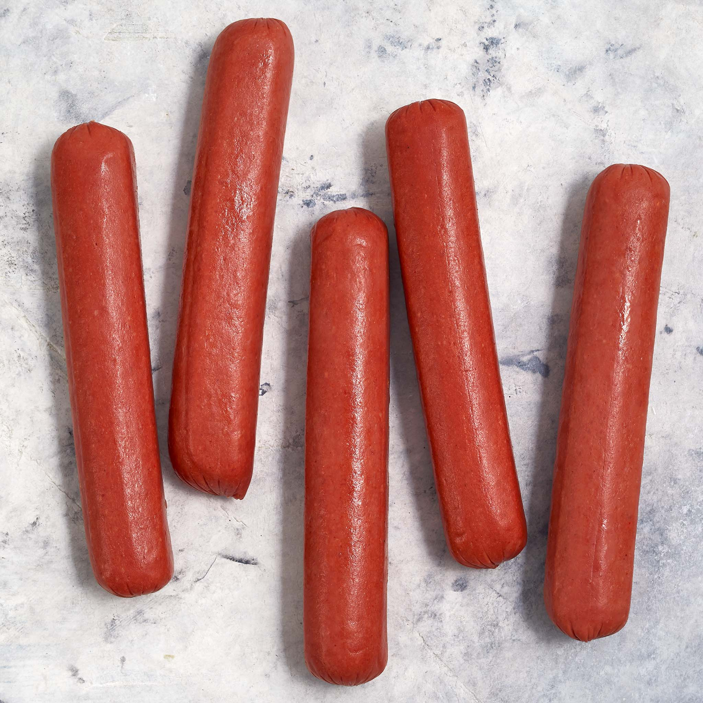

Hotdog

Description
A hot dog is a food consisting of a grilled or steamed sausage served in the slit of a partially sliced bun.
Ingredients
- 1/4 cup very finely minced onion.
- 1 small clove garlic, finely chopped.
- 1 teaspoon ground coriander.
- 1 teaspoon ground coriander.
- 1/2 teaspoon ground mustard seed.
- 1/4 teaspoon dried marjoram.
- 1/4 teaspoon ground mace.
- 1/4 cup milk.
Steps
- Bring a small pot of water to a boil.
- Add 1 hot dog. Boil uncovered for 4 to 6 minutes, until the hot dog has plumped up on all sides.
- Remove with tongs and drain on a paper-towel-lined plate.